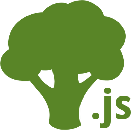

L'art d'aspirer votre code
Créé par Baptiste Donaux
Baptiste Donaux
- Développeur Symfony chez Wanadev
- www.wanadev.fr
- www.baptiste-donaux.fr
- @baptistedonaux
- baptiste.donaux@gmail.com
- baptistedonaux
Gulp, qu'est-ce que c'est ?
- Un Task Manager
- Basé sur Node.js
- … écrit en JavaScript
La concurrence dans tout ça ?
Et aussi…
Comment installer gulp.js ?
C'est la base…
(par François)
// package.json
{
"devDependencies": {
"gulp": "3.9.*"
}
}$ npm install// gulpfile.js
var gulp = require('gulp');
// et c'est tout$ gulpIntroduction et convention
// package.json
{
"gulp": "3.9.*",
"gulp-imports": "0.0.*",
"gulp-less": "3.0.*",
"gulp-livereload": "3.8.*",
"gulp-minify-css": "1.2.*",
"gulp-uglify": "1.4.*",
"gulp-watch": "4.3.*"
}Introduction et convention (less)
// gulpfile.js
var gulp = require('gulp'),
less = require('gulp-less'),
minifyCSS = require('gulp-minify-css'),
path = require('path');
gulp.task('css', function () {
return gulp.src("./app/Resources/public/stylesheet/**/*.less")
.pipe(less({
paths: [ path.join(__dirname, 'less', 'includes') ]
}))
.pipe(minifyCSS())
.pipe(gulp.dest("./web/css"));
});
gulp.task('default', ["css"]);Introduction et convention (less)
// app/Resources/public/stylesheet/main.less
@import (inline) "../../lib/bootstrap/dist/css/bootstrap.css";
@swag: red;
body {
background-color: @swag;
}
Introduction et convention (js)
// gulpfile.js
var gulp = require('gulp'),
imports = require('gulp-imports'),
uglify = require('gulp-uglify');
gulp.task('js', function () {
return gulp.src("./app/Resources/public/js/**/*.js")
.pipe(imports())
.pipe(uglify())
.pipe(gulp.dest("./web/js"));
});
gulp.task('default', ["js"]);Introduction et convention (js)
// app/Rescources/public/js/main.js
//import("../../lib/jquery/dist/jquery.js");
//import("../../lib/bootstrap/dist/js/bootstrap.js");
$(document).ready(function() {
console.log("Juste du swag… Just !");
});
Introduction et convention (gestion des environements)
Pour gérer son environement de dev différement de celui de prod, vous pouvez créer des tasks différentes.
- css-dev
- css-prod
- js-dev
- js-prod
// gulpfile.js
gulp.task('dev', ['css-dev', 'js-dev']);
gulp.task('prod', ['css-prod', 'js-prod']);
gulp.task('default', ['dev']);Introduction et convention (gérer le reload des fichiers - watch)
// package.json
{
"gulp-livereload": "3.8.*",
"gulp-watch": "4.3.*"
}// gulpfile.js
var gulp = require('gulp'),
livereload = require('gulp-livereload'),
watch = require('gulp-watch');
gulp.task('watch', function () {
var onChange = function (event) {
console.log('File ' + event.path + ' has been ' + event.type);
livereload.changed(event.path);
};
livereload.listen();
gulp.watch("./app/Resources/public/stylesheet/**/*.less", ['css-dev']).on('change', onChange);
gulp.watch("./app/Resources/public/js/**/*.js", ['js-dev']).on('change', onChange);
});Allez plus loin
JSX ?
// package.json
{
"gulp-jsx": "2.0.*"
}// gulpfile.js
var jsx = require('gulp-jsx');
gulp.task('js', function () {
return gulp.src('./app/Resources/public/js/**/*.js')
.pipe(jsx({
factory: "createElement"
}))
.pipe(gulp.dest('./web/js'));
});Maintenant, vous n'avez plus d'excuse !